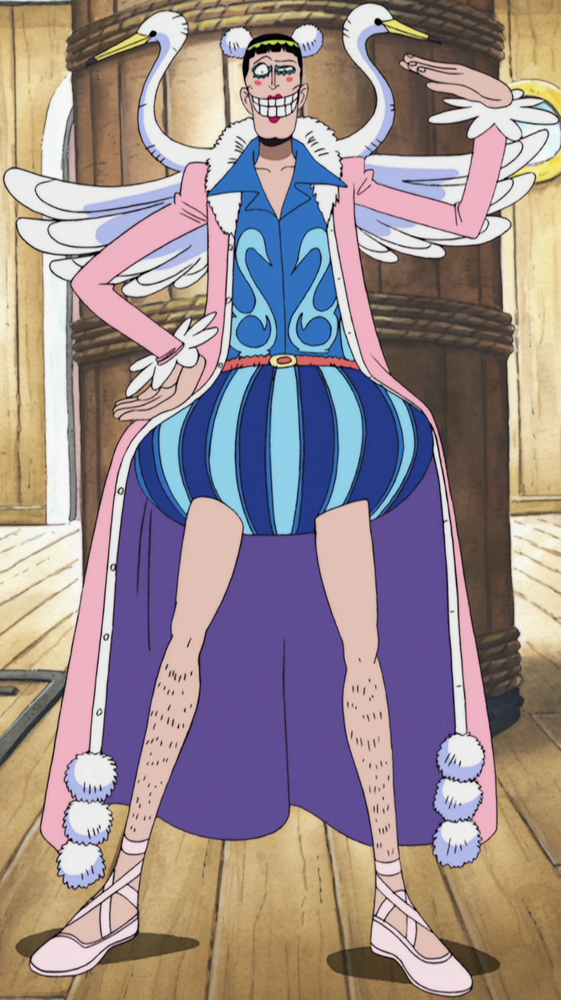
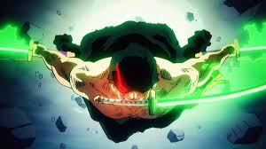
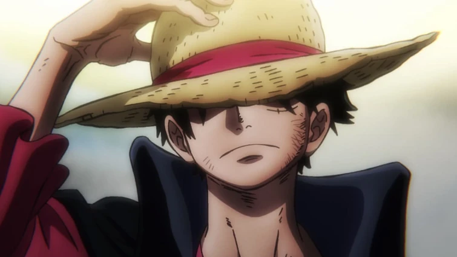

I really like Bonclay for many reasons but im going to name 3 important reasons. Number 1 Bonclay is an overall funny goofy character that no one can really hate. Number 2 he's a very loyal companion to have by your side no matter how crazy your goals are he will be there helping you. 3rd and final reason while helping the main character Luffy try to save his brother Bonclay stayed at the prison to free Luffy but he sacrifised himself for Luffy.

Top 3 Reasons why i like Zoro. Number 1 he is the most loyal crew mate on Luffy's crew and would obey any order no matter how crazy it is. Number 2 he's just a cool character and has a goal of making his captain king of the pirates and becoming the worlds strongest swordsmen. Number 3 he offered to take all of his captains pain and almost dies but he stands and when people ask what heppend he says "what happend here nothing... nothing at all" which became an iconic line.

3 Reasons why i like Luffy. Number 1 Luffy is just a goofy main character that has his priorites. Number 2 Luffy is also painted as a bad person but he saves people from the corrupted goverment and gets respected for it. Number 3 during every fight he doesnt give up and keeps fighting till he wins also hes a aura farmer.